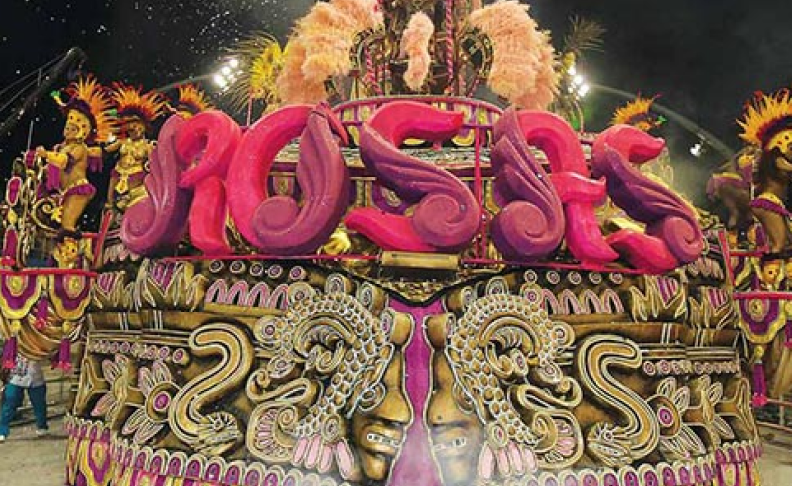
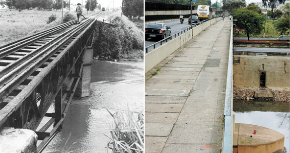
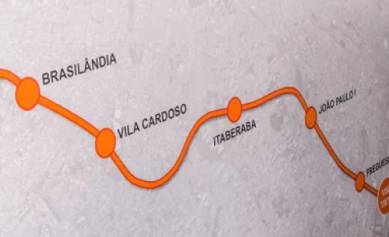
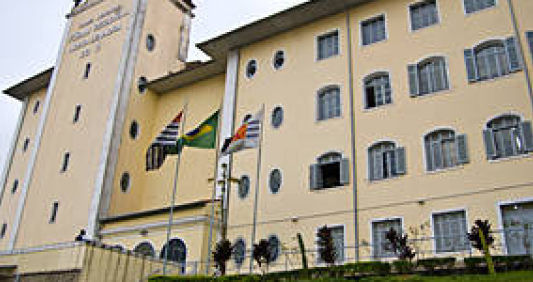

Escola de Samba Rosas de Ouro:
Um dos grandes orgulhos do bairro Freguesia do Ó é a sua Escola de Samba Rosas de Ouro, criada em 1971 para honrar a história do bairro e o samba e é algo que as pessoas da região se orgulham muito. Foram campeões mais de 8 vezes no carnaval paulista! Isso nos anos de 1973, 1974, 1983, 1984, 1991, 1992, 1994 e 2010.
O local acabou se tornando um centro de cultura quando falamos do samba podendo ser encontrado atrás da Igreja da Matriz e levando o nome de Casa de Cultura Salvador Ligabue.
Primeiro Pedágio de São Paulo:
O primeiro pedágio de que se tem notícia no estado de São Paulo foi implantado em 1741 na ponte sobre o rio Tietê, na então conhecida estrada para a freguesia da Nossa Senhora do Ó, a ponte ainda é utilizada e liga, a até então conhecida como Vila de São Paulo, ao pequeno bairro de Nossa Senhora do Ó.
Nova Linha de Metrô:
O bairro não para de crescer! Foi anunciado em 2013 a construção da linha 6 laranja, algo que pretendia favorecer as pessoas que moram na região norte da cidade de São Paulo. Infelizmente por problemas financeiros a obra ficou parada por um tempo por causa da pandemia e acabou retomando sua construção em Agosto de 2020, a previsão é que ela fique pronta até Agosto de 2023.
A prefeitura da capital decidiu fazer esse projeto porque acredita que irá gerar cerca de 9000 empregos, além de atrair mais público para a região.
O trajeto terá 15 quilômetros de extensão, passando pelas estações Brasilândia, Vila Cardoso, Itaberaba-Hospital Vila Penteado, João Paulo I, Freguesia do Ó, Santa Marina, Água Branca, Pompeia, Perdizes, Cardoso de Almeida, Pacaembu, Higienópolis-Mackenzie, 14 Bis, Bela Vista e São Joaquim.
Tem o próprio Fórum Cível:
Temos um fórum que outros lugares não tem, o Fórum Cível nossa senhora do Ó.
O horário de funcionamento é:
- 12:30 as 19:00 Público Geral
- 11:00 as 19:00 Certidões
- 12:30 as 18:00 Juizado Especial Cível
Endereço: Rua Tomás Ramos Jordão, 101.
Contato: +55 (11)3991-9800
Igreja da Matriz:
A igreja da matriz é o ponto de referência quando falamos da Freguesia do Ó. As pessoas costuumam visitar o lugar e ficar facinados!
Os desenhos nas paredes e a estrutura da igreja é algo "fora da curva" de tão bonito!
Para aqueles que quiserem, é possível ver a missa que funciona nos horários a seguir:
- Segundas, quartas, sextas e sábados: 7h, 8h, 18h.
- Terças: não há missas
- Domingos: 7h, 8h30, 10h, 11h30, 16h, 17h30 e 19h.